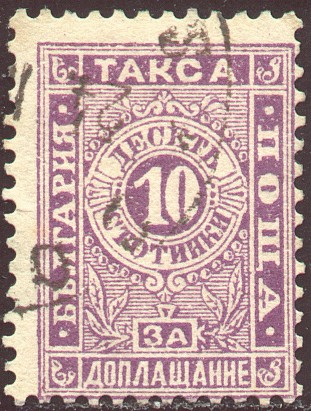

{kind=link}

Return To Catalogue - Bulgaria - Bulgaria fiscal stamps
Note: on my website many of the
pictures can not be seen! They are of course present in the
catalogue;
contact me if you want to purchase it.
5 s orange 10 s violet (only perforated) 25 s red 30 s green (only perforated) 50 s blue Surcharged
'30' on 50 s blue (perforated) '30' on 50 s blue (imperforated)
For the specialist: In 1884 the values 5 s, 25 s and 50 s were issued with a very peculiar perforation (so-called serpentine perforation):
(Serpentine perforation)
The same 3 values were issued imperforate in 1886. From 1887 to 1896 normally perforated stamps were issued of all values.
Value of the stamps |
|||
vc = very common c = common * = not so common ** = uncommon |
*** = very uncommon R = rare RR = very rare RRR = extremely rare |
||
| Value | Unused | Used | Remarks |
| Serpentine perforation (1884) | |||
| 5 s | RR | R | |
| 25 s | R | R | |
| 50 s | R | R | |
| Imperforate (1886) | |||
| 5 s | *** | *** | |
| 25 s | *** | *** | |
| 50 s | *** | *** | |
| 30 on 50 s | *** | *** | |
| Wide perforation (about 11, 1887) | |||
| 5 s | *** | * | Two types; with small or large inscription on top and bottom |
| 25 s | *** | * | |
| 50 s | *** | *** | |
| 30 on 50 s | *** | *** | |
| Narrow perforation (13, 1896) | |||
| 5 s | *** | * | '5' smaller |
| 10 s | *** | * | |
| 30 s | *** | * | |

5 s red 10 s green 20 s blue 30 s lilac 50 s orange
These stamps have perforation 11 1/2.
Value of the stamps |
|||
vc = very common c = common * = not so common ** = uncommon |
*** = very uncommon R = rare RR = very rare RRR = extremely rare |
||
| Value | Unused | Used | Remarks |
| 5 s | c | c | |
| 10 s | * | c | Error: 10 s blue: RRR |
| 20 s | * | * | |
| 30 s | * | * | |
| 50 s | R | R | |

5 s green 10 s violet 20 s red 20 s orange 30 s orange 50 s blue 1 L green 2 L red 3 L yellow
These stamps have perforation 11 1/2. Specialists distinguish stamps issued on yellowish and white paper. The values 50 s , 1 L, 2 L and 3 L were used as postage stamps in 1923 and 1924.
Value of the stamps |
|||
vc = very common c = common * = not so common ** = uncommon |
*** = very uncommon R = rare RR = very rare RRR = extremely rare |
||
| Value | Unused | Used | Remarks |
| 5 s | c | c | |
| 10 s | c | c | |
| 20 s red | * | * | |
| 20 s orange | * | * | |
| 30 s | c | c | |
| 50 s | * | c | |
| 1 L | * | c | |
| 2 L | * | c | |
| 3 L | * | * | |
Surcharged, used as provisional postage stamps (1924)
10 s on 20 s orange 20 s on 5 s green 20 s on 10 s violet 20 s on 30 s orange

These stamps were issued in 1924. The following values exist: 1 L (black on green, brown, orange, red or violet on red) and in a different design: 2 L (green or violet) and 5 L (blue or red).
1 L brown and green 1 L green and yellow (1931) 1 L red and brown (1933)
1 L brown and red 1 L green and blue 5 L brown and blue (slightly different design)
{kind=link}